Removal
1. Obtain five digit radio theft protection code, as outlined under Technician Safety Information, before disconnecting battery.2. Disconnect both battery cables from battery, then remove strut bar and control box. Do not remove vacuum tubes from control box.
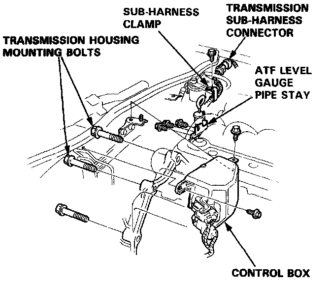
3. Disconnect sub-harness electrical connector and remove clamp, then remove three ATF level gauge pipe stay bolts.
4. If removing differential, drain, then reinstall plug with new washer and torque to 33 ft. lbs.
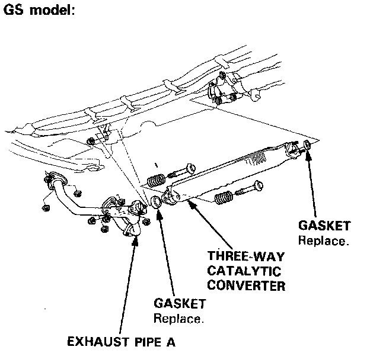
5. Drain transaxle fluid, reinstall plug with new washer and torque to 36 ft. lbs. then remove three-way catalytic converter.
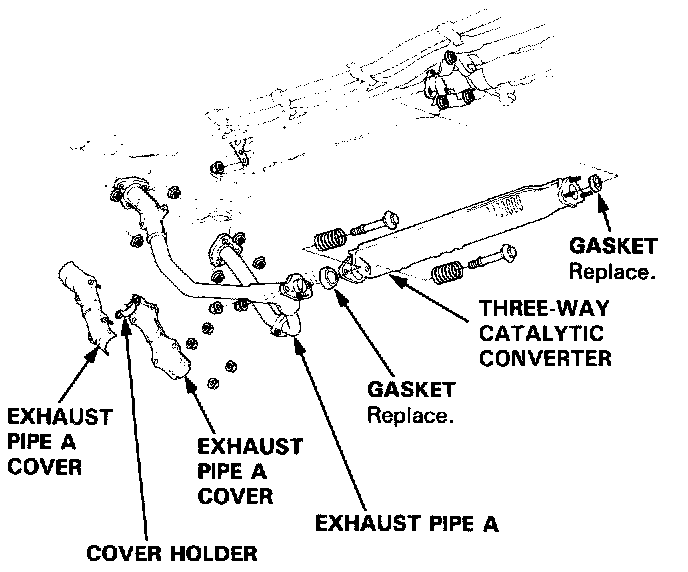
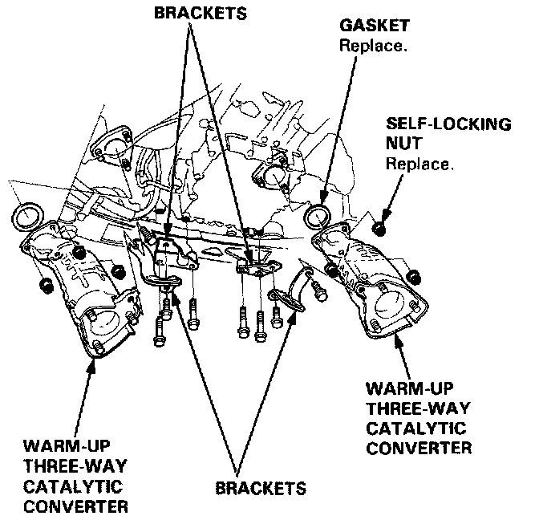
6. Remove exhaust pipe, then brackets and warm-up three-way catalytic converters.
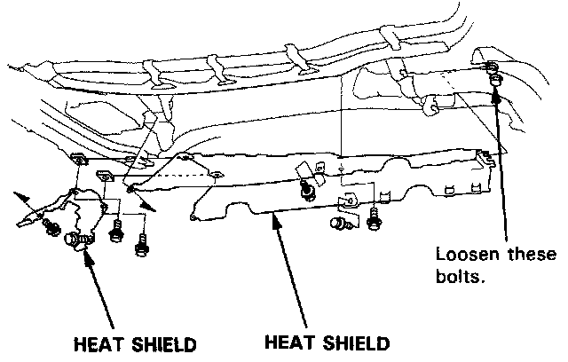
7. Remove heat shields, then remove ATF cooler hoses at joint pipes and turn ends up to prevent linkage.
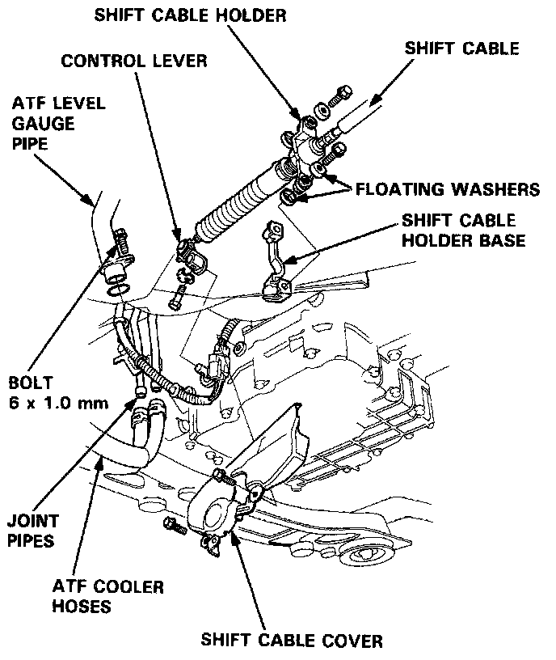
8. Disconnect transaxle sub-harness electrical connector from shift cable cover, then remove shift cable cover and holder.
9. Remove control lever from control shaft and ATF level gauge pipe from torque converter.
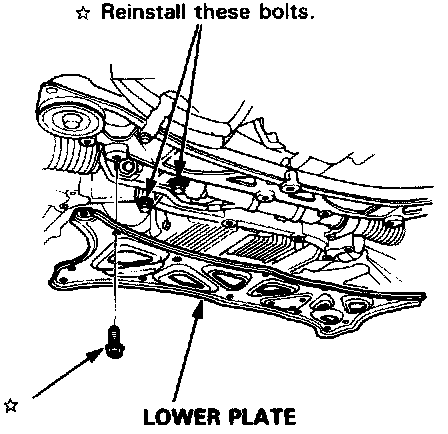
10. Remove lower plate, then reinstall steering gearbox mounting bolts.
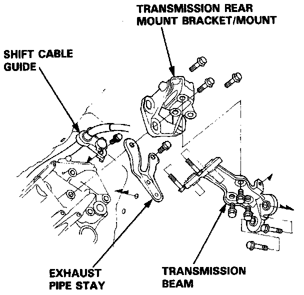
11. Remove shift cable guide. Do not bend shift cable.
12. Remove transaxle beam, rear mount and exhaust pipe stay.
13. Shift selector to P position rotating control shaft, then remove secondary cover and sealing bolts.
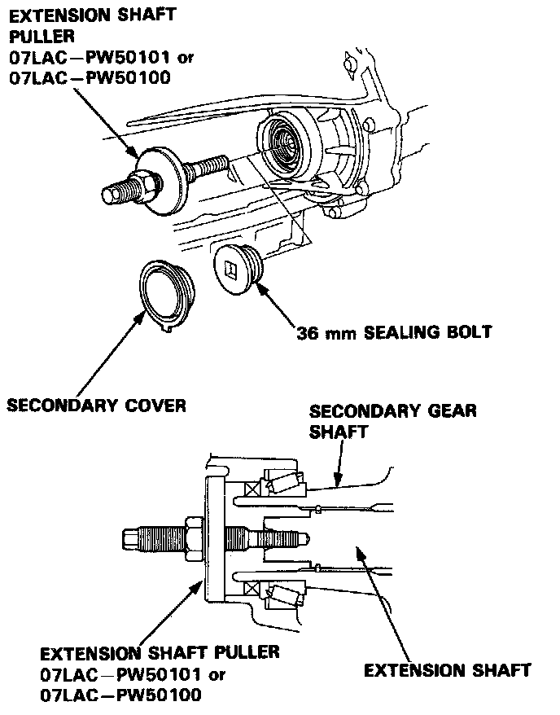
14. Use special extension shaft puller tool No. 07LAC-PW50101 or 07LAC-PW50100, or equivalents, to remove extension shaft from differential.
15. If differential is to be removed, remove mounting bolts, shim and differential.
16. Place a suitable jack under transaxle and raise just enough to unload mounts, then remove mid mounts.
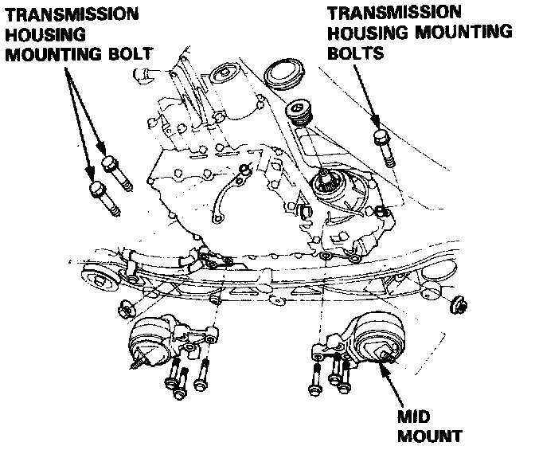
17. Remove transaxle mount bolts, engine stiffener and torque converter covers.
18. Remove drive plate bolts one at a time while rotating crankshaft pulley. Removing spark plugs will make crankshaft rotating easier.
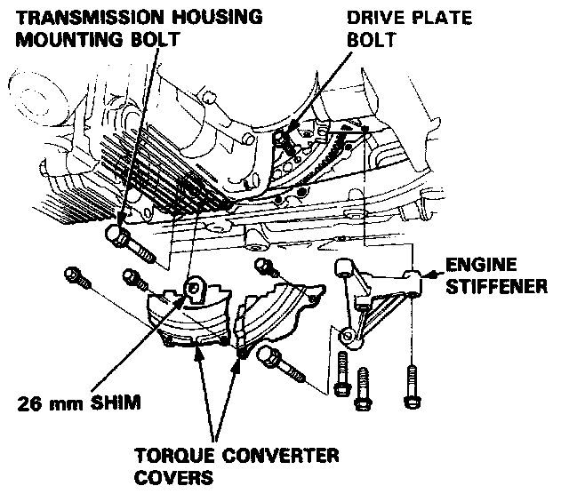
19. Remove transaxle housing mounting bolts.
20. Pull transmission away from engine until it clears dowel pin, then lower in on transmission jack.
21. Flush ATF cooler.